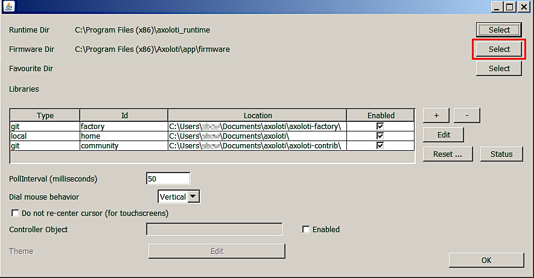
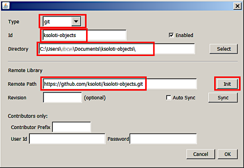
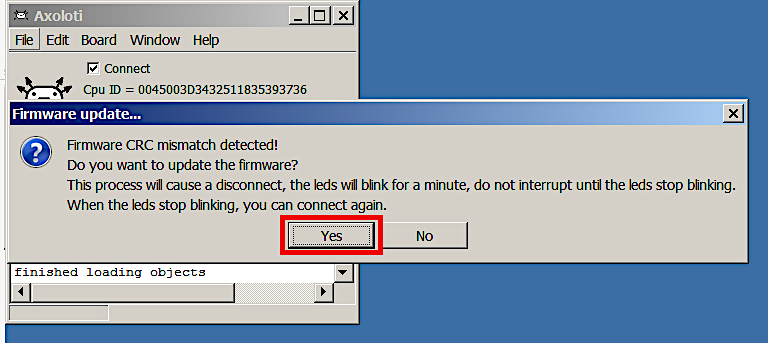

3.1. Install on Windows
Main window of the Axoloti Patcher.
The install process for Ksoloti is identical to Axoloti with a few extra steps. To reduce size we split the application into two parts, the main Axoloti application, and a runtime which contains other required files. You must download and install both.
Note that you may also have to install Java. Try without installing Java first in order to not mess up your system’s current Java configuration (if any). If the Patcher does not start or complains that Java was not found you can get it here.
If your Ksoloti Core is currently connected via USB, disconnect it now.
-
Install the runtime. Head to https://github.com/axoloti/axoloti/releases/tag/1.0.12-2 and download the latest axo_runtime_win-(version).zip (at the time of writing: axo_runtime_win-1.0.12.zip).
Extract the zip file and move the folder axoloti_runtime to
- C:\Program Files (x86)\ (64-bit Windows), or
- C:\Program Files\ (32-bit Windows)
Check that you have the correct folder structure:
- C:\Program Files (x86)\axoloti_runtime\platform_win, or
- C:\Program Files\axoloti_runtime\platform_win
The Axoloti runtime is now installed. You will not have to move or edit it unless there is a big update, or you reinstall your OS, etc.
-
Install the Patcher. From the link in step 1, download the newest axoloti-win-(version).msi (at the time of writing: axoloti-win-1.0.12-2-java1.8.0-191-wix3.11.msi) and execute it.
If you get a warning from Windows about running an untrusted program, this is due to it not being signed. You can safely ignore this. Click on More Info, and then click on Run Anyway (or similar).
Go through the installation process.
-
The Patcher is now installed. Now we need to link it to the custom Ksoloti firmware. Head to https://github.com/ksoloti/ksoloti and download the source code as a zip file.

Extract the file ksoloti-master.zip (or similar) to a location of your choice. I usually place it in My Documents.
-
Open the start menu, type in Axoloti, and start it (this is the Patcher).
-
In the Patcher, open the File menu and click on Preferences... In the resulting window you will see an option called Firmware Dir.
Click on Select and navigate to the path where you extracted the Ksoloti zip from step 3. Then find the subfolder \firmware in the ksoloti-master folder (or similar) and click Open.
When you’re done the Firmware Dir field should read something like [...]\ksoloti-master\firmware. It is important that you point the directory to the [...]\firmware subfolder. In this example I decided to place the ksoloti-master folder in my Documents folder. Click OK.
-
Close the Patcher and restart it for the new firmware path to take effect.
-
Let’s do a first test to make sure all the directories are correctly set. Open the Board menu and click Firmware > Compile. There should be a lot of text running across the console and it should end with the message Done compiling firmware. This is good news – everything is set up correctly so far!
-
We now need to tell the Patcher to fetch the custom ksoloti-objects repository for us. It contains the custom objects so that you can use all GPIO and functions of the Ksoloti Core.
Open the File menu and click on Preferences... again. In the resulting window you will see a table containing items like “factory”, “home” and “community”. Click on the “+” button to the right of it.
The “add library” window will appear. This is where we set up the remote address to the ksoloti-objects repository. Enter the following settings:
Type: git
ID: ksoloti-objects
Directory: (Click Select and select a folder of your choice. Then, add the string “\ksoloti-objects\” to the path in the text field. This will let Git automatically create the folder ksoloti-objects in the folder you have selected. In this example I again chose my Documents folder then added “\ksoloti-objects\” to the end of the path.
Remote Path: https://github.com/ksoloti/ksoloti-objects.gitClick Init and confirm. This should create the ksoloti-objects folder in your selected folder and fill it with the custom Ksoloti objects so the Patcher can find and use them. Click OK, and OK again to close the preferences.
-
Connect the Ksoloti Core board. Windows will install the necessary drivers (if they are not already installed) and create a USB device called Ksoloti Core. If you get an error or if there is a yellow question mark next to the Ksoloti Core in your Device Manager, you will have to use Zadig to install the working driver. Download and run the newest zadig.exe. Click Options > List all devices. Select the Ksoloti Core from the drop-down menu, and click Replace Driver (or similar). The default settings should be fine.
-
In the Patcher, click on Connect. You might get a Firmware CRC mismatch warning. This is because the firmware has been updated since your Ksoloti board was shipped. Click Yes.
The Patcher should update the board automatically. Wait until it is done. When only the green LED lights up steady, you can click on Connect again.
Congratulations, you’re done with the tedious setup process and finally ready to open some patches!
Because we are currently using the original Axoloti Patcher, setting up all these custom folders is necessary to ensure legacy compatibility. We are working on making the installation simpler in the future.